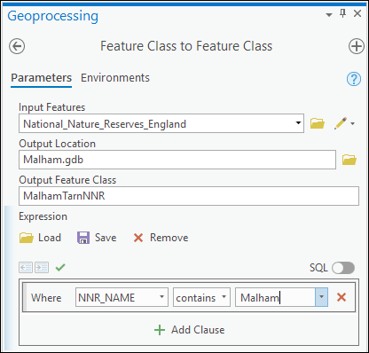

Introduction to GIS with ArcGIS Pro
The background to GIS and an explanation of what it is will be covered in the lecture segment at the beginning of the class, and the presentation and any other supporting materials will be available in Minerva. The lecture segment should help you to understand why you are doing these exercises. If you still aren’t sure, please ask Clare.
Learning outcomes
When you have completed this section of the workbook you should be able to
- demonstrate how to open a map project in ArcGIS Pro
- select appropriate tools to navigate in a map document
- use layers to organise and display information on a map
- add information to a layout and prepare it for printing or display
- demonstrate different ways of finding help when using GIS
Introduction to the exercises
As a GIS specialist you have been asked by the Field Studies Council (FSC) to produce a geological map of the area around the Malham Tarn National Nature Reserve (NNR) where they have a field centre.
For this first exercise I have created a basic geological map of Malham Tarn so that you can explore the GIS application and get used to basic navigation and functions. In future sessions you’ll be preparing the data and setting up the basics for yourself.
Obtaining and opening the sample map
The sample map is based on British Geological Survey (BGS) data covering Malham Tarn in North Yorkshire and uses data from a number of sources with which you will become familiar during this module.
- download the
MalhamMinerva.zipfile from Minerva and save it so that you can remember where it is located. - Create a new folder called
gis- look at the box below to see where to create it
Where to save your work
- if you are on your own computer choose a location where you usually save your files - preferably on an internal drive such as c:
- if you are on a University cluster machine create it on your m:/ drive
- if you are using the University Virtual Windows Desktop create the new folder on the desktop. You will then need to remember to move it to your network m:/ drive or One Drive before you log off the VWD
- To create the folder once you are in the correct location right-click and choose
New folder...
- unzip the downloaded file to your
gisfolder.- In
My Computerright-click on the 7zip or zip file 7-zip > Extract Files...- select the location to save the files to and clickOK- or, if you don’t have 7-zip, right-click, Extract Files… - select the location to save the files to and click
OK
- In
Warning
Never try to use the contents of a zipped file in Arc without extracting it first - it won’t work. If you are looking for a file in Arc and can’t find it, always check via My Computer that the file isn’t inside a zip or 7zip archive.
Open the sample map
- Open Arc by searching for __ArcGIS Pro_ in the start menu of your computer and clicking on it. Be patient - Arc can open slowly sometimes!
- From the splash screen select to
Open another project. If you don’t have the splash screen useProject > Open
- Navigate to the folder in which you unzipped the downloaded file and open
Malham.aprx - Alternatively you can navigate in Windows Explorer to the folder to which you unzipped the downloaded data
- Go into the
Malhamfolder and double-click on theMalham.aprxfile - the map should open (slowly…)
- Go into the
Your ArcGIS window should look similar to the figure below:
The map ribbon
The menu ribbon at the top of the window gives you a variety of tools. Hover over the buttons to see the tooltips that explain what each button will do.
Try out the navigation tools
Have a look for each of the tools suggested below and try them out to see what they do. Remember that you can use the tool tips to identify the tools.
Make notes for yourself so you remember this in future.
Fixed zoom in- also try using the mouse wheel to zoom in and outFixed zoom outFull extentZoom to layer- this one isn’t on the ribbon. Right-click on the title of the BedrockGeol layer in the contents pane then selectZoom To Layer1- Click the
Selectbutton then click and hold on the map, drag out a rectangle, and let go of the mouse button. What happens? Why do you think this is? - Click on the
Clearbutton in the Selection group. Now what happens? - Click on
Explore, then click on one of the bedrock geology areas on the map. Also try some of the options found by clicking on the down arrow under theExplorebutton. - Click on
Locate. The locate pane should open on the right of your map. TypeMalham Tarn Housein the search box and select one of the results2.
Change scale
Instead of zooming in and out with the mouse wheel you can change to a particular scale, e.g. 1:100 000, by simply using the drop down box at the bottom of the window to select the scale you want. You can also type a scale in this box, particularly if the scale you want isn’t in the list, e.g. 1:50 000 (note that you can type it in with no punctuation), and it will change to that when you press return.
Spatial bookmarks
Spatial bookmarks enable you to go back to a view that you have set up earlier. The map of Malham Tarn has a bookmark set up showing the area of the Malham Tarn National Nature Reserve.
Spatial bookmarks in Arc
This video clip can be found in the module area of Minerva or in the full list of video clips.
To open the bookmark:
- Go to
Bookmarkson the ribbon and selectMalham Tarn NNR
To set up your own bookmarks:
- Pan the map to a different location and change the scale if you want to
Bookmarks > New Bookmark...then type a name for your bookmark and clickOK- The bookmark should be visible as a thumbnail when you click on
Bookmarksagain.
How does the spatial bookmark affect scale?
Change the scale of the map and pan to a different view, then go to the bookmark that you have just set and check the scale again. How has the bookmark affected that?
The Bookmark Manager allows you to view all of your spatial bookmarks, sort them, and remove any that you no longer need.
Bookmarks > Manage Bookmarks...- Try
creatinganother bookmark in the manager - Experiment with the options in the manager, including
Zoom ToandPan To Removethe last book mark that you created
Catalog pane
The Catalog pane allows you to explore and find out more information about your data.
- If the catalog pane isn’t visible on the right of the window already, go to
View > Catalog Paneon the ribbon to open it. - Explore the tree in the Catalog pane by opening out all of the subheadings (click on the small arrows). You should end up with something like the image below.
The view that you have been working in shows a Map and this is available under the Maps heading in the Catalog. If you close your map you can reopen it from here.
The Layouts heading shows any print layouts that have been set up. You should already be able to see one, just called “Layout”.
The heading for Databases shows the geodatabase which contains most of the information which makes up the map. If you open out the geodatabase Malham.gdb you can see the data feature classes that are stored within in.
There is another subheading for Folders. This has a “home” folder for this project - Malham. You can also add other folders here so that you can add data from outside of your project. See the information on for how to do this.
Working with map layers
Layers are an essential part of any GIS. Each layer is a reference to a particular data source. In the Malham map project the layers include:
- SuperficialGeol
- LinearGeol
- Contours
What are the names of the other layers in the Malham map?
Layers are controlled from the Contents pane to the left of the map window.
Go to the module area of Minerva or the full list of video clips and watch the video clip on working with layers. If you are working in a cluster you will need your own headphones to avoid disturbing other students.
Once you have watched the video clip get used to working with layers by following the instructions below.
Viewing contents of layers
In the contents pane:
- Click on the small arrow next to a layer to open and close the layer contents
- The contents pane also acts as a key to your map and shows the symbols for map features
Renaming layers in the contents pane
You can make the layer names more useful by changing them in the contents pane. This also means that the names are clearer when you generate legends prior to printing or exporting maps.
Note that you are not renaming the original data file by doing this, but just changing how the name appears in Arc. You should get into the habit of doing this as it makes it easier to see what your layers contain.
- Select
BedrockGeolin the contents pane and pressF2on the keyboard, or double-click slowly on the layer name - Type the new, more descriptive name, e.g.
Bedrock geology(with a space) and then pressEnter
Turn layers on and off
Once a layer is in the contents pane you can turn the layer on and off to view or work with other data, without needing to remove it completely.
- Click in the box next to the
Bedrock geologylayer title to turn the bedrock geology off in the map - Turn other layers on and off and see what the map looks like but finish with all of the current layers visible.
Add new layers
There are two simple ways to add new layers.
This video clip can be found in the module area of Minerva or in the full list of video clips.
Add data command
Try the following:
Map ribbon > Add data...then navigate to the folder in which you unzipped the map - you’ll need to start by going intoFoldersin the browse dialog, then go to theMalham > vml-raster_bwr > sdfolder, and addsd86ne.tif- When you add tif or jpg files to Arc for the first time as a layer it sometimes asks you whether you want to create pyramids. It’s your choice, but usual advice is to select
yesto create them. Pyramids can save time when you are zooming in and out of your map but take a while to create when you first load the file3. - If you can’t find the folder in order to add the image follow the instructions in the Add Folder Connection section.
This is an example of a VectorMap Local layer in black and white. The data is available in colour too, but as a background for a geological map black and white tends to be clearer. Zoom in closer and you’ll be able to see more detail (if you can’t see the layer make sure that it is above all the other layers in the contents pane - you can change the order by dragging layers around in the pan).
There are three other tif files in this folder too so to add those:
- Go to
Map ribbon > Add data...and make sure you are in theMalham > vml-raster_bwr > sdfolder again - Click on one of the remaining three files then hold down the
Shiftkey or theCtrlkey and click on the other two to select them too - Click
OK
In this way you can add as many files as you want in one go.
Drag and drop
Instead of clicking on add data, the alternative is to simply find the file in the Catalog pane and drag and drop it onto the map area or into the contents pane.
- The Catalog pane should be visible to the right of your map. If it isn’t click the
Viewtab on the ribbon and click on theCatalog pane. You should see something that looks like the image below.
- In the Catalog pane go to the
Folderssection, go into theMalham > Malham.gdbfolder and drag and dropNational_Nature_Reserves_Englandon to your map. If you drag it over to the contents pane you can choose whereabouts in the layer structure it will appear - add it to the top so that you can see it. - If you can’t find the folder in order to add the image follow the instructions in the Add Folder Connection section.
- If you can’t see the new layer try using
Zoom to layerto make sure you are in the right place on the map.
Your map should look similar to the image below.

National_Nature_Reserves_England, as it says, shows all of the National Nature Reserves in England, which includes the Malham Tarn National Nature Reserve (NNR).
You’ll need the National_Nature_Reserves_England layer and background layers again, so leave them visible on your map.
While it is possible to add data by dragging and dropping from Windows file explorer it really isn’t a good idea to do that. It might look as if it has worked at first, but things can go horribly wrong… Instead use one of the two methods listed above.
Adding a folder connection in the Catalog pane
If you can’t see your M:/ drive or USB device in the list of folders when adding data or viewing the catalog you need to Connect to folder.
- Right-click on the
Folderssubheading in the Catalog panel Add Folder Connection(see image below) and select your top level gis folder, or your M: drive then clickOK. If you select the drive that you want, rather than navigating right to the file, you’ll be able to navigate to any files within it.- Now select your files from the folder that you can see.
On cluster computers you’ll probably find that you have to repeat this each time you start work in Arc, unfortunately.
Add a folder to the Folders heading using the Add folder connection command now to check that you can do it.
Change the order of layers
Changing the order of layers is simple once you remember that they “stack up” in the order in which they appear on the contents pane. So the layers towards the top will cover up the layers lower down.
- To change the order of layers so that the
National_Nature_Reserves_Englandlayer is below one of theBackgroundlayers, simply use the mouse to drag the layer down to the bottom of the contents pane and drop it there.
You should find that the background layers cover up the National Nature Reserve layer so that it is no longer visible.
- Move the
National_Nature_Reserves_Englandlayer back up to the top of the contents so that you can see it again. - Check where the
contourslayer is in the contents. If it is below the black and white tif layers that you added, move it so that it is above those.
Make layers transparent
Use the bookmark to go to the Malham Tarn NNR on your map. (Spatial bookmarks.) You should be able to see that the polygon making up the reserve is symbolised in a solid colour which hides the detail of the base map underneath. We need to make the layer transparent so that it is still possible to see the detail of the layers below it in the contents pane.
- Start by making sure that you have the National Nature Reserves layer switched on, then select it in the contents pane. Try to have your contents pane looking something like the image below.
- Click to open the
Appearancetab on the ribbon. TheEffectsgroup contains a slider to control transparency and a box showing percentage.
- 0% is fully opaque, 100% is fully transparent. Try several steps between 30 and 60% and see what difference it makes.
Using the above instructions move the layers around in the contents pane and change transparency for various layers, just to see what the possibilities are.
Grouping layers
The three geological layers are related to each other and could be grouped together to organise the map. Amongst other advantages this would make it easier to turn all of the geology layers on and off together.
- Right-click on the word
Mapin the contents pane. SelectNew Group Layer, click on the New Group Layer that appears and give it a name such asGeologythat tells you what the group is. New use the mouse to drag the SuperficialGeol; LinearGeol and BedrockGeol layers so that they appear indented underneath the layer name. - Try turning off the
Geologygroup layer to check that all of your layers are actually together. Don’t forget to turn them back on again!
You can also select several layers first and then group them as follows:
- Select the
contourslayer and the four black and white tif background layers using theShiftorCtrlkeys to allow you to select multiple layers - Right-click on the selected layers and click on
Group - New rename the group title to something like
Background map
Remove layers
You added four black and white background tif maps, but only two of those are actually needed for your final map. It can be a good idea to keep the amount of data in your project down to what you really need - though it makes more difference for a large area, or a large amount of data.
To remove the layers you don’t need:
- Right-click on the
sd96sw.tiflayer in the contents pane thenRemove - and do the same with the
sd86se.tiflayer
Note that this doesn’t delete the data from your disk, it just removes the link to it from your map. Check this in the Catalog pane - the layers should still be available if you want to add them back in again.
Using Basemaps
The lowest layers on your map are probably called something like World Topographic Map and World Hillshade.
To make sure that you can see these layers turn off the layers above it by unticking the boxes. If you’ve grouped layers you should just be able to turn off the groups.
If you look at the Source for the World Topographic Map by double-clicking on the layer and choosing the Source heading, you’ll see that it’s Data Type is listed as Vector Tile Service.
The data type for the World Hillshade will be ArcGIS Map Service.
When you create a new map in ArcGIS Pro you are automatically given a basemap of this type. It’s useful as it gives you some idea of where you are. These layers are also very convenient as background maps, and it is possible to change the basemap that your map uses.
You do have to wait a bit sometimes for these layers to load as they are downloading data over the internet, then reprojecting it to appear on your map. For this reason it is often not a good idea to rely on these maps.
If you find that your maps are loading very slowly, or that you have to wait a long time for anything to display, turn off the ESRI background layers or, even better, remove them completely from your map. They can cause maps to become extremely unstable and start to crash.
- On the
Maptab of the ribbon click on the down arrow underBasemap - From the list of alternatives click on
Imagery Hybrid(this has the imagery with labels, roads, borders etc added)
Have a look at the Imagery Hybrid layer, then try out some of the others. When you’ve investigated turn this layer off as you will need to use the background black and white layer instead. Turn the rest of the layers on your map back on.
Viewing an attribute table
Data for GIS is stored in tables as feature attributes. You can view the attribute table to get an overview of your data, and to carry out some useful operations.
This video clip can be found in the module area of Minerva or in the full list of video clips.
- Right-click on the
Bedrock geologylayer in the contents pane and click onAttribute table.
A pane that looks similar to the image below should open at the bottom of your map window.
Have a look at the structure of the table:
- Each row contains one record - the details for one feature on the map.
- Each column is one field - or attribute. That is, related information for each feature, such as Label.
- If you are working with polygon features in a geodatabase4, as you are here, the
Shape_LengthandShape_Areafields will automatically be created and filled in with the length of the outline and the area of the polygon. Try scrolling across to see these fields in the Bedrock geology attribute table. - If you are working with line features in a geodatabase the
Shape_lengthfield will automatically be created and filled in with the length of the line.
The measurements will be in map units - find out what these are set to by right-clicking on Map (the title of the map frame) in the contents pane and going to Properties. Under General look at Map units.
What are the map units of the current map? Make a note for yourself. This information will be useful later.
Selecting features in the attribute table
It can be useful to be able to select features directly in the attribute table rather than by having to click on the map, for example, if you can already see the attributes for the feature that you want to select!
This video clip can be found in the module area of Minerva or in the full list of video clips.
- In the attribute table click on the little grey area to the left of one of the records. The feature will be selected in the table, and will also be selected on the map.
- You’ll probably need to right-click on the little grey area then select
Pan to. The map will move so that the selected feature is in the centre, and the selected feature will flash. Selected features are marked in a bright turquoise colour in the attribute table and a turquoise outline on the map. - Use the
Selecttool from the Map tab of the ribbon to click on a bedrock feature on the map and notice that this selects the same feature in the attribute table. - In the attribute table click in the grey area next to the first of the features that you can see. Now hold down the
Ctrlkey and click on the third feature. In this way you can select more than one feature at a time. The up arrow will also work. - To view only your selections click on the
Show selected recordsbutton at the bottom left of the attribute table pane. - To view all records again click on
Show all records. Remember that if you hover over a button you’ll see a tooltip telling you what the button does. - to clear selections click on the
Clearbutton either on the attribute table top bar or in theSelectiongroup on the ribbon.
- Right-click on the
Shape_Lengthcolumn heading and click onSort Ascending. This will reorder the table from low to high by the length of the feature, so the shortest at the top.
Play around with the attribute table and explore what else you can do.
When you’ve finished, clear all selections by clicking on
Clearin the Selection group of the Map ribbon, then Close the attribute table pane by clicking on the cross on the tab at the top of it.
Finding help for ArcGIS
I’ve been throwing a lot of new terms at you here. Don’t worry - most of them will become more familiar as the course goes on. Don’t forget that you will be able to look back at these instructions. You can search the document if you are looking for specific techniques.
In addition you can make use of some resources provided by ESRI, the company who produce ArcGIS.
ArcGIS Pro Help
ArcGIS Pro Help is available online. You’ll find this useful when you start using more advanced tools in Arc, but if you’re not sure of something it is worth searching in the help.
- As an example go to the ArcGIS Pro Help pages and use the search box at the top to search for
select feature attribute. - You’ll get a lot of results but the top one should be “Select features using attributes”, which should be the most relevant.
In addition, if you want to explore further ways to use GIS there are lots of tutorials available on the ESRI website. Do make sure that you look at tutorials that apply to ArcGIS Pro, not to any other version of Arc!
ESRI GIS Dictionary
The Dictionary can be useful if you need to remember what a particular term means.
- Go to the ESRI GIS dictionary
- Type
Attribute tablein the search box and press enter - The answer should match what you’ve already learnt in the attribute table section of these instructions.
Practice using the dictionary by completing the exercises below.
“Raster” and “vector” are the two main types of data structure used in GIS and you will come across these many times during this course.
Use the GIS dictionary to find out what
rasterandvectormean and make a note of the definitions for yourself. Use diagrams if it will help you to remember the difference.
Saving a map
IMPORTANT: Develop the habit of saving your map projects at regular intervals. Arc can crash when carrying out some operations and you don’t want to lose all of your work. Crashes can also corrupt data files, so copy the whole of your gis folder to another location or drive at frequent intervals (i.e. create a backup copy). It can be useful to rename each backup folder with the date of the backup, then you can make sure you keep a couple of copies to go back to if there are problems.
To save your project:
- Either
Project > Savefrom the menu - or use the
saveicon on the quick access toolbar at the top left - or use
Ctrl + Son the keyboard
Styling a layer
Styling a single symbol
At the moment the symbol for the National Nature Reserves is a polygon with a thin outline and a transparent fill. Let’s change that so that the outline is thicker and there is no fill at all.
This video clip can be found in the module area of Minerva or in the full list of video clips.
- Right-click on the
National Nature Reserveslayer and click onSymbology - OR click on
Symbologyon the Appearance tab of the ribbon
The Symbology pane should open to the right of the map window. The layer is symbolised as a single symbol - a single random colour which is used for all polygons in the layer, as shown below.
- Click on the coloured “patch” next to
Symbol - The
Galleryshould open, if it doesn’t click on the Gallery heading at the top of the panel - The gallery shows you lots of choices of symbology, try some of them out but finish by clicking on
Black Outline (2pts)- you may need to hover over items to see the full names.

As soon as you click on a new symbol in the gallery the features on your map should change.
While there are a lot of symbols available, they may not always be quite what you need. For the NNR outline we’ll change the colour of the line.
- Click on the
Propertiesheading at the top of the Symbology panel
- Change the
Outline colorto something bright which will stand out against the rest of your map - Because you selected just an outline in the gallery the
Colorchoice isNo Color. If you want to add a fill colour you can select it here - Press
Applyto change the style of the features on your map
Styling with multiple symbols (Unique Values)
Make the SuperficialGeol layer in the Malham map visible by clicking the little box next to it so that it is ticked. At the moment the layer is symbolised as a single colour. By using multiple colours, or classes, you can make your map much more informative.
- Open the attribute table for the
SuperficialGeollayer and have a look at the data that it contains. The column headedRCS_Dcontains information on what type of unconsolidated deposits are shown by each feature. Make a note of the field name. - Close the attribute table
- Right-click on the
SuperficialGeollayer and click onSymbology
This video clip can be found in the module area of Minerva or in the full list of video clips.
To symbolise the layer as multiple colours by geology type:
- Select
Unique Valuesin the dropdown box at the top of the symbology pane - In the
Field 1box that appears selectRCS_D- the field we were looking at earlier
You should find that you get a list of the values of RCS_D to which Arc will have assigned random colours.
- You can change the colours and thicknesses of the lines by clicking on each symbol in turn - click on the “patch” next to PEAT now.
- If you click on the
Galleryheading you’ll get a choice of preset styles - click on one of them now, e.g. Cultural. You should see the new symbol appear for some of the features on your map. - As with the single symbology, in the
Propertiesheading you can set up your own styles. Click on this heading and try making some of the line widths thicker, and change the colour of the symbol.
- If you click on the
- This time you’ll need to click on
Applyto see the result on your map - Click on the back arrow at the top of the pane to go back to the full list and try setting the other symbols too
You may find it easier to see what you are doing if you turn off all of the other layers in the contents pane.
Selecting and intersecting two different layers
Now that you have your data in a GIS, why not take advantage of its power? You can use GIS to select features which are within a certain distance of features in another layer. For example, which bedrock geology features appear within 2 km of, and in Malham Tarn NNR? We can use Select by location to find out.
Make sure that both the bedrock geology and the National Nature Reserves layers are visible in your map.
Exporting a selection of a feature class
Zoom to layer on the NNR layer and you should be able to see that it covers the whole of England. To start with here we’ll create a feature class which just includes the Malham Tarn NNR - this will make the next step simpler and save time as you won’t be processing data that you don’t need.
- Right-click on the layer containing the data that you want to select - in this case the National Nature Reserves layer
Data > Export features- to bring up a dialog that should look like the image below- Choose to save the new Output feature class in the project geodatabase (Malham.gdb) and give your output a name, e.g.
MalhamTarnNNR- note no spaces in the feature class name - To select just Malham Tarn NNR do the following:
- Click on the
New Expressionbutton - In the three boxes next to
Wherefill inNNR_NAME- using the dropdown boxcontains the text- again using the dropdown box- type in
Malham Tarn
- then click to
Run

The new layer should be automatically added to your map. To check that this has worked properly Zoom to layer on your new layer and check that the outline of the Malham Tarn NNR fills the map area.
Now remove the original national nature reserves layer from the contents list and you should be left with just the Malham Tarn Reserve which you had selected via the expression. Try symbolising the reserve as a single, green outline symbol with no fill.
Select by location
Select by location allows you to select features based on their relationship to another layer, or other features. This is one of the key tasks in GIS and it is extremely useful to know how to do this, for example, if you want to export a subset of features that match the area that you are studying.
This video clip can be found in the module area of Minerva or in the full list of video clips.
- From the Map tab of the ribbon click on the button to
Select by Location
The dialog should open in the Geoprocessing pane on the right. Fill it in as shown below (see the image below too).
Input Featuresshould be the layer which contains the features that you wish to select, in this case theBedrock geologyRelationshipshould be set toIntersect(but have a look at the other options which are available)Selecting Featuresis the layer that indicates the location you want to select against, so theMalham Tarn NNR- We’ll also add a small margin so that bedrock areas which have parts within 2 km of the nature reserve will also be selected, so enter the
Search distanceas2000metres. Selection typeshould beNew selection- Now click on
Runat the bottom of the pane
Now your map should show the bedrock geology features which are within 2 km of the Malham Tarn NNR outlined in the selection colour - probably bright blue/turquoise in this case. You may need to zoom in a bit to see them properly!
Exporting selected features to a new feature class
Once you have selected the features you can make the selection permanent by exporting it to a new feature class.
- Right-click on the layer containing the selection - the bedrock geology layer
Data > Export features- Choose to save the new
Output feature classin the project geodatabase (Malham.gdb) and give your output a name, e.g.MalhamGeology - Then
Runthe tool
The new layer should be automatically added to your map.
Now remove the original bedrock geology layer and you should be left with just the features which you had selected and exported.
Try symbolising them using Unique Values so that each type of bedrock geology is a different colour. Use LEX_RCS_I as Field 1.
How many features are there in the new layer showing only the bedrock geology within 2 km of the Malham Tarn NNR? You should be able to tell by opening the attribute table for the layer.
Layout - laying out a map for print or export
So far we have been working in the Map. If you print the map from here you have little control over its appearance. To produce a professional-looking map you need to use a layout. The information given here is just a quick introduction, you’ll cover layout and presentation in more detail in a later section.
- In the Catalog pane open out the
Layoutssubheading and double-click on theLayout
The layout window looks similar to the map window, but shows the layout as it will appear when printed or exported. You still have the contents pane on the left of the screen and the ribbon at the top, but the ribbon will offer some different options.
- On the ribbon go to the
Layouttab. Use the buttons in theNavigategroup to zoom in and out of the layout and move around it - Try the tools in the
Mapgroup on theLayouttab in this view too. - In addition you can open out the contents of the Map Frame in the Contents and Zoom to Layer on any of the layers, just as you did in Map view.
- To move the actual map, rather than the layout, you need to click on the
Activatebutton in the Map group on the Layout tab. Once you’ve done that you can pan and zoom the area of the map using the mouse. Once you’ve finished click on the back arrow at the top of the Layout window to get back to the usual Layout view.
What is the difference between zooming with the tools in the Navigate group of the Layout tab and with the tools in the Map group in layout view?
To get back to the original view use the bookmarks just as you did earlier. There should be a bookmark called Malham Tarn NNR that you can click on.
Adding elements to the layout
Most of the maps that you create will need to be printed out with additional content such as a title, a key or legend, a scale bar and some text. I’ve already added a measured grid and a scale bar to this layout. You’ll add a title and copyright text to this map but you’ll learn more about layout in a later chapter.
This video clip can be found in the module area of Minerva or in the full list of video clips.
To add text
To add text to your layout:
- Go to the
Inserttab on the ribbon - In the
Textgroup click onTextthen select the top option -Text - Click on the layout somewhere close to where you want the text to appear (you can move it later!)
- Type the text that you want to add - for now type the text below as a title - then click elsewhere on the layout to come out of the text box.
The geology of Malham Tarn National Nature Reserve
Formatting text
You’re likely to want to change the default text option. There are books about cartography on the reading list which give more information about font choices, but for now use the instructions below to play around with the options.
- If you select the text that you’ve just added, you should see a
Format Textpane open on the right of the window - Click on
Text symbolto get options to change the text appearance - As with symbology the
Gallerygives you preset choices, or go toPropertiesto set your own - You can see what the style will look like at the bottom of the pane. Once you’re happy with it click
Applyto change the style of your text.
Investigate the options in the Format Text pane to set the text that you’ve just added as a title at the top of the page.
Adding copyright text
Copyright acknowledgement is important!
Always check the terms and conditions for any data that you use. Most will tell you the wording that you should use - though it can take a bit of finding sometimes!.
When you sign up to the Digimap service for UK data you’ll find out more about the correct acknowledgements you need to use for their data. For this map, which uses data from Digimap, add the text below to your layout.
If you are using an ESRI basemap the acknowledgement for that will automatically be added to your map - though it does sometimes cover rather a lot of the map.
© Crown copyright and database rights 2020. Ordnance Survey (100025252)
Geological Map Data BGS © UKRI 2020
There is more information about adding text and copyright acknowledgements in the layout chapter which you will be working through later.
Printing or exporting a map
Don’t worry about printing your map for now, but try exporting it as both a pdf and an image.
Printing a layout
To print your layout:
- If you need to change the paper size and orientation use the tools on the
LayoutribbonPage Setupgroup - To print go to the
Sharetab on the ribbon and click on the printer button in thePrintgroup - Set up the printer as you would usually5 then click to
Print
Exporting a layout
To export a layout to a pdf or an image:
- If you need to change the paper size and orientation use the tools on the
LayoutribbonPage Setupgroup - To export go to the
Sharetab on the ribbon and click on the green arrow in theExportgroup - Select the format that you wish to export and give your file a name. Check the other options are correct and change as appropriate (you may find that the defaults are OK) and then
Export
Suggested layout
Your final map could look something like the map below. It is unlikely to look identical as you should make your own decisions about where to place elements and how to display your map.
Export your final layout as a pdf. If you email me your map I will give you feedback on what you have done so far. If you have any questions about this chapter please feel free to email me to ask or ask during the live sessions.
Recommended reading: Introduction to GIS
Many of the books in the reading list6 have a general introduction to GIS which explain what it is and how it is used. Suggestions include the following:
- Chapter 1, What is GIS? in Heywood, I., Cornelius, S. and Carver, S. (2011), pp. 2-30
- Chapter 1, Systems, Science and Study in Longley, P.A. et al. (2011), pp. 3-37
Videos online
If you find videos helpful then search online for specific tasks in ArcGIS Pro.
Examples include:
Navigating ArcGIS Pro: The Basics Part 1 and other videos in the playlist from the University of Toronto Library
Also:
Quick start tutorials from ESRI which start with the video at the link.
-
Zoom to layeris a very useful tool. It can be particularly useful if you have zoomed in or out too far and can no longer see your map properly.Zoom to layerand you’ll usually be able to see enough to find the bit of map that you really want to see. ↩ -
If nothing happens when you search, try the following: Click on the
Settingstab above the search box. Click onArcGIS World Geocoding Service- check it’sEnabled, and move it to the top of the list (above XY provider). Go back to theLocatetab and hopefully the search will work now. ↩ -
If you want more information about how pyramids work, search for raster pyramids in the Arc Help. ↩
-
You’ll find out more about geodatabases later so don’t worry too much about this for now. ↩
-
Setting up a printer is system specific so I can’t give you specific instructions for this. ↩
-
The reading list is available in Minerva and from the library (search for the number of this module). ↩